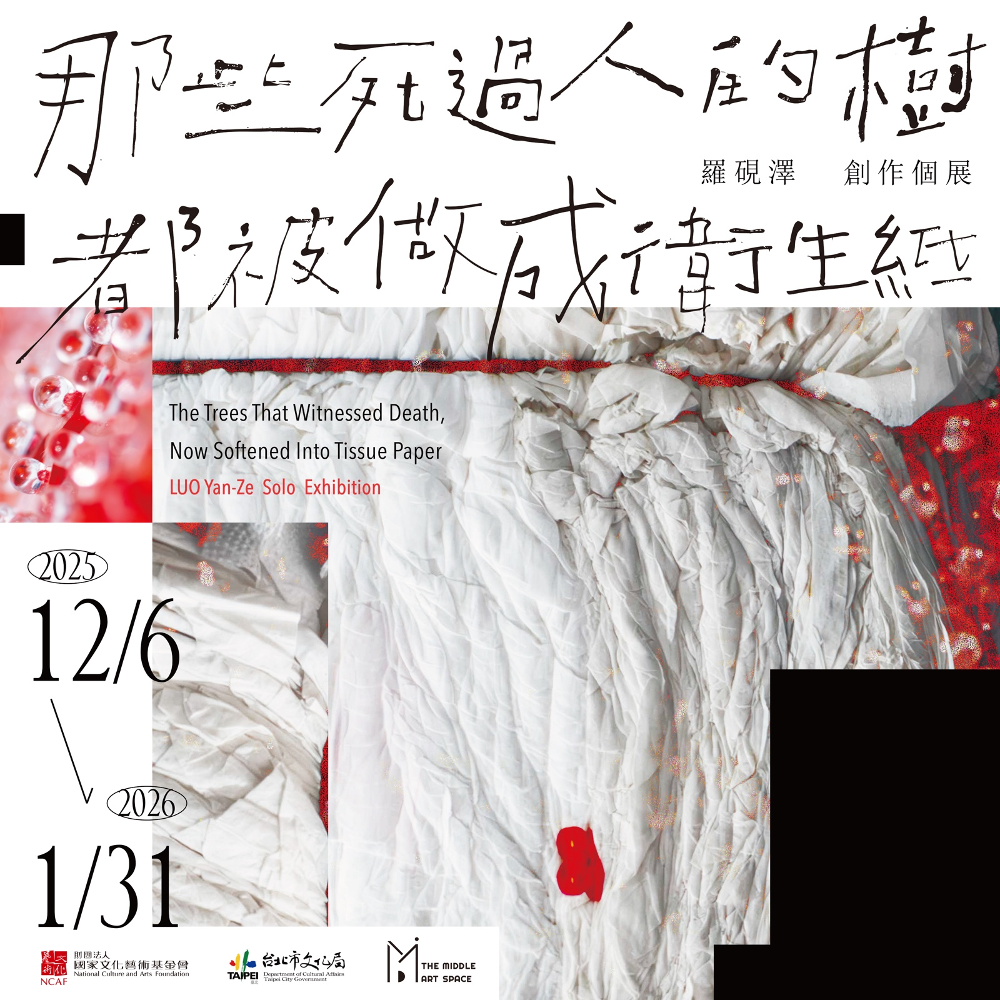
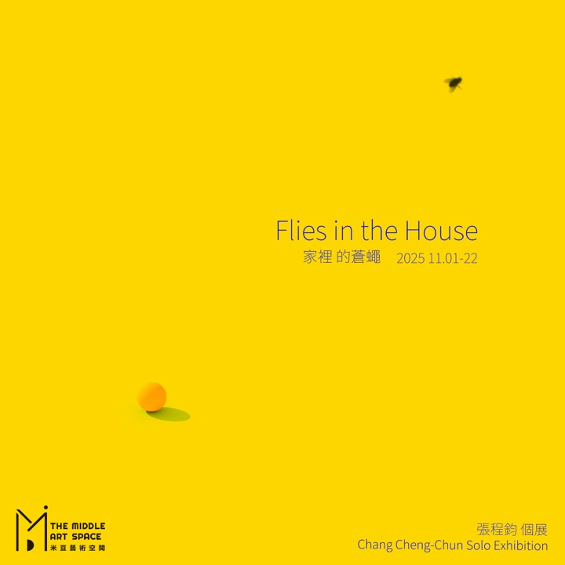
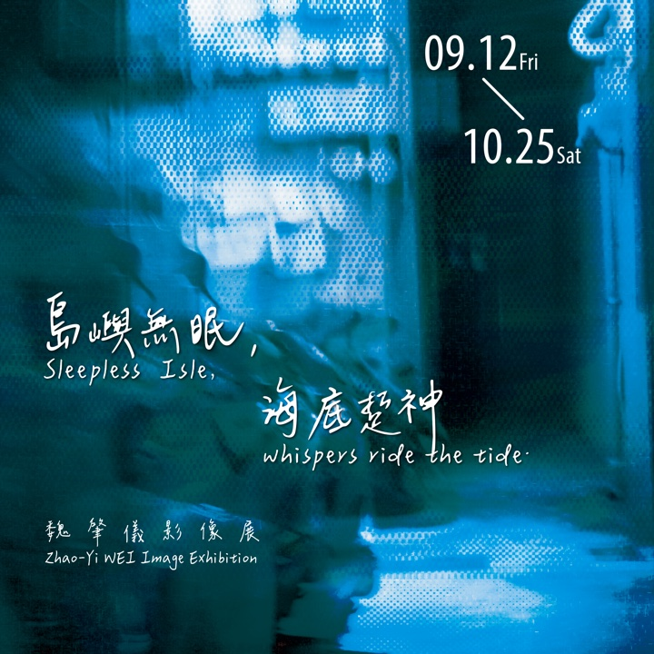
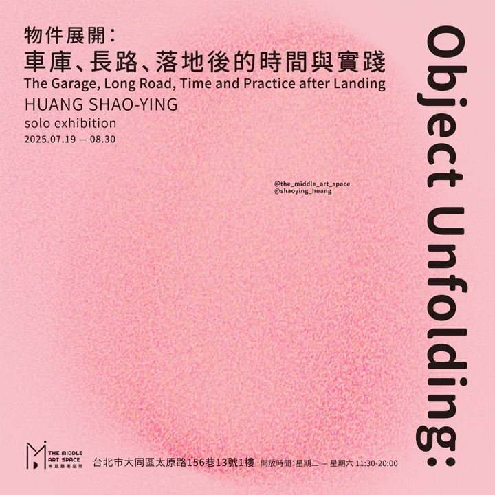
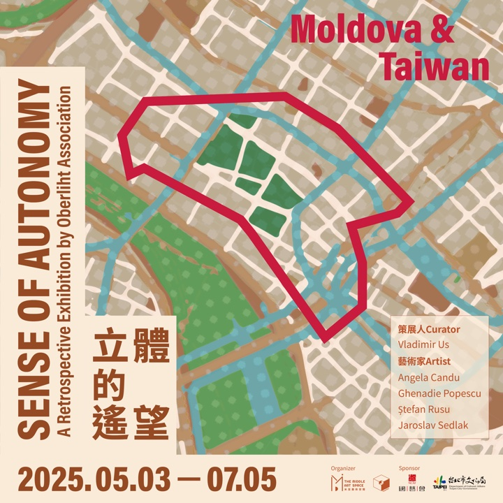
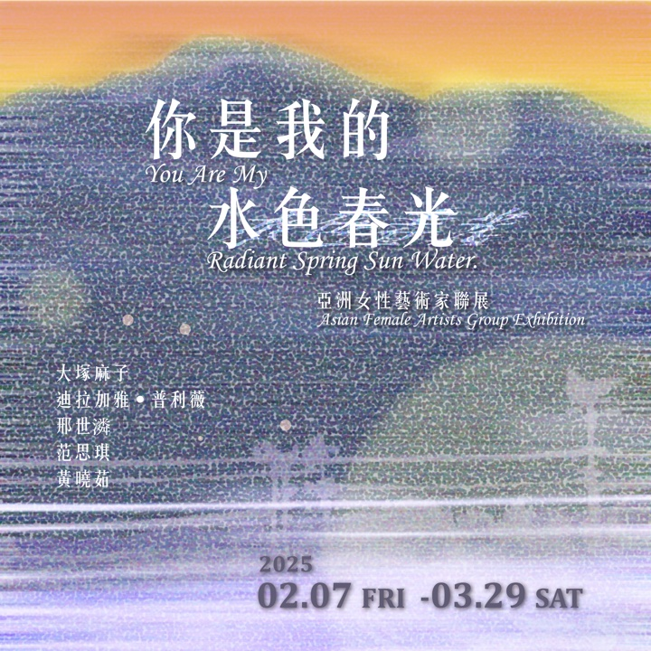

/Publications

那些死過人的樹，都被做成衛生紙：羅硯澤 創作個展
The Trees That Witnessed Death, Now Softened Into Tissue Paper: LUO Yan-Ze Solo Exhibition
Project Overview: Empathy and Translation at the Border

家裡的蒼蠅：張程鈞個展
Flies In The House: Chang Cheng-Chun Solo Exhibition

魏肇儀影像展：島嶼無眠，海底踅神
Zhao-Yi WEI Image Exhibition:
Sleepless Isle, whispers ride the tide.

物件展開：車庫、長路、落地後的時間與實踐
Object Unfolding: HUNG SHAO-YING The Garage, Long Road, Time and Practice after Landing solo exhibition

立體的遙望 Sense of Autonomy – A Retrospective Exhibition by Oberliht Association
